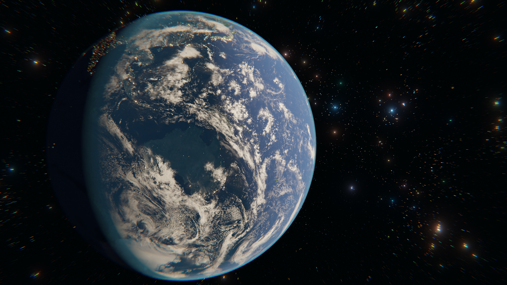
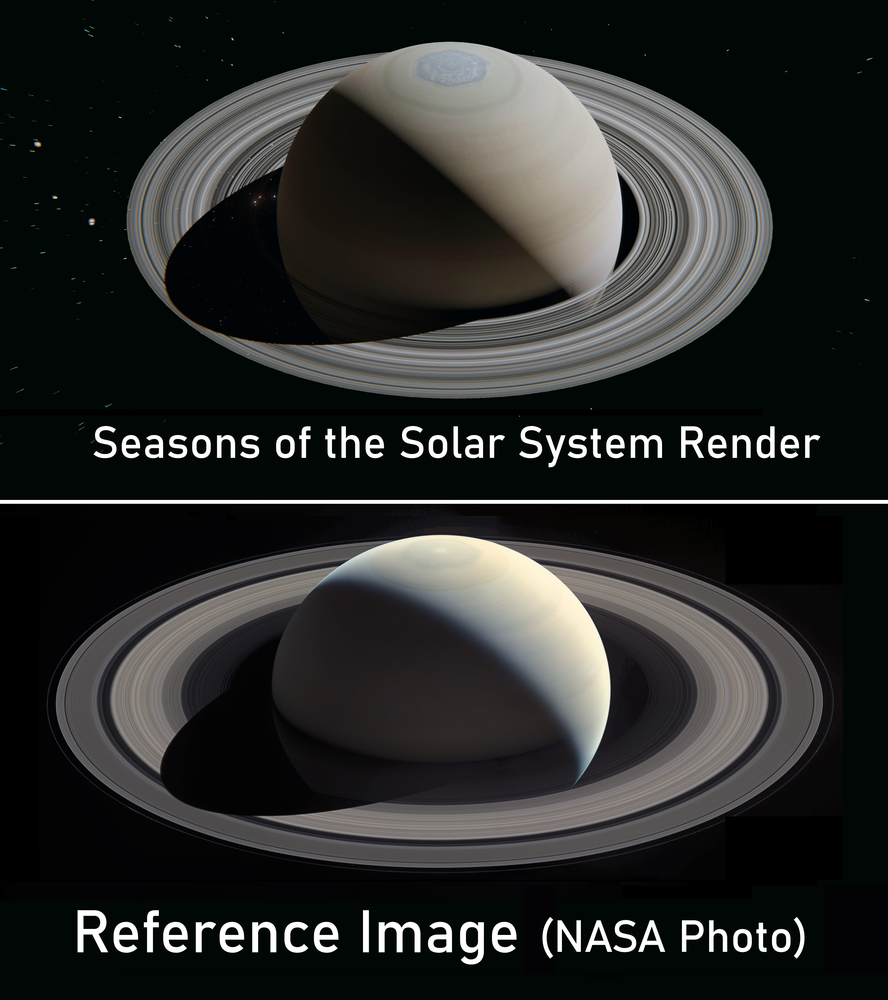
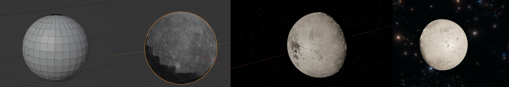
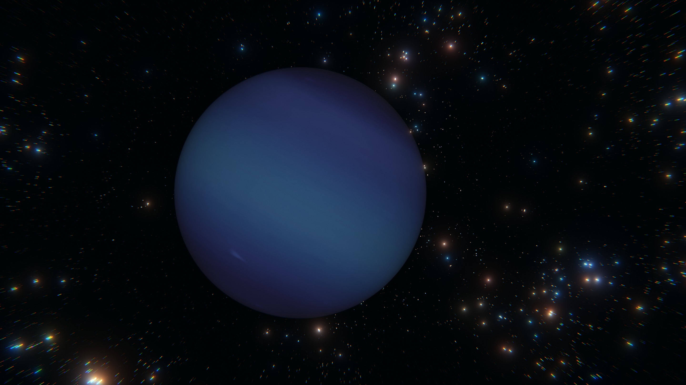
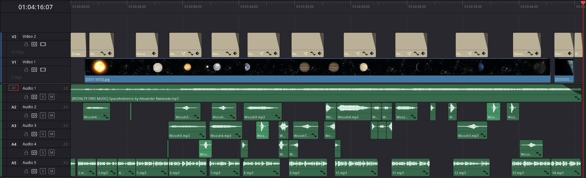
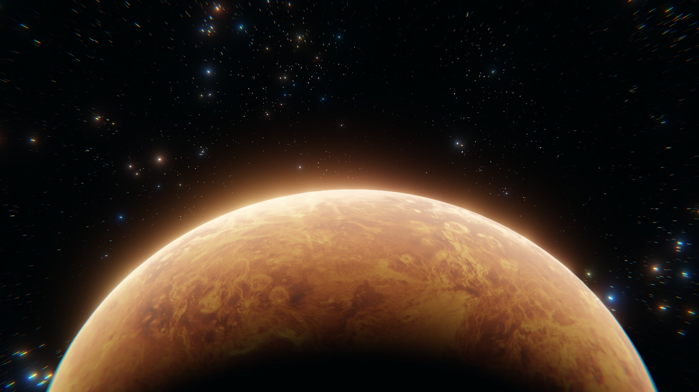

Seasons of the Solar System
A creative visualisation to teach about the seasons on each of the planets in the solar system, completed for a university assignment.
I created shaders and used NASA textures for each of the planets, and created a shader for the stars.
I am very proud of the level of visual quality I managed to achieve, in no small part thanks to Blender's excellent usability and renderer.
The animation was created and rendered in Blender using Cycles. It was edited using chaiNNer and Davinci Resolve.
 I composited and edited the footage together, adding sound effects, text and music.
A copy of the Design Documentation for the project can be found here.
